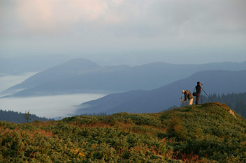
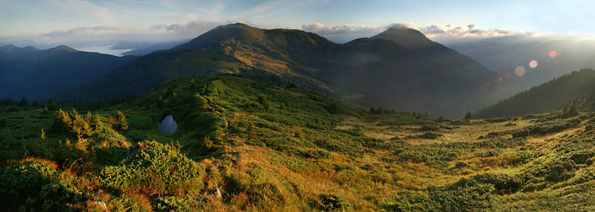

Сходження на г.Риси (2 503 м.) Словаччина. Високі Татри
Маршрут на Риси досить популярний, хоча б через те, що будучи на вершині можна одною ногою бути в Польщі, а іншою вже в Словаччині.
Маршрут починається біля озера й однойменного міста Štrbské Pleso, далі по Татранській магістралі йде до наступного озера Popradské pleso, потім до роздоріжжя один поворот якого приведе вас на Копровський Штит, а інший безпосередньо на Риси.
Підйом по серпантину вздовж річки Żabi Potok. То тут – то там треба переходити через водоспади.
Практично одразу відкриваються краєвиди на хребет Hřeben Bašt.

Десь там фрагмент підйому на Копровський Штит.
 Хребет Hřeben Bašt ще називають Satanský hrebeň.
Після доволі нудного серпантину дорога виходить до озер Vel’ke i Malé Žabie pleso Mengusovské.
На мою думку, одні з найкрасивіших озер в Татрах.
Хребет Hřeben Bašt ще називають Satanský hrebeň.
Після доволі нудного серпантину дорога виходить до озер Vel’ke i Malé Žabie pleso Mengusovské.
На мою думку, одні з найкрасивіших озер в Татрах.
 Хороша інфраструктура. Перила, скоби, ланцюги, любе і різне. Так як ціна несправності може бути дуже високою, все підтримується в хорошому стані.
По великому рахунку додаткові точки опори потрібні хіба в кількох моментах на спуску, або в погану погоду.
Новий ракурс на озера.
Хороша інфраструктура. Перила, скоби, ланцюги, любе і різне. Так як ціна несправності може бути дуже високою, все підтримується в хорошому стані.
По великому рахунку додаткові точки опори потрібні хіба в кількох моментах на спуску, або в погану погоду.
Новий ракурс на озера.
 І от ми на вершині. На горизонті видно характерний силует гори Кривань (2494), та Копровський Штит.
І от ми на вершині. На горизонті видно характерний силует гори Кривань (2494), та Копровський Штит.
 Хребет що розділяє Польщу й Словаччину.
Далі наша задача полягала в швидкому спуску, і на фото часу вже не залишилось. І вже за півтори години пили татранський чай і запивали пивом в хаті на Попрадському плесі.
Хребет що розділяє Польщу й Словаччину.
Далі наша задача полягала в швидкому спуску, і на фото часу вже не залишилось. І вже за півтори години пили татранський чай і запивали пивом в хаті на Попрадському плесі.
Від Івана до Івана: 5-денний маршрут Мармаросами
Якби доля надала мені можливість повернутися в минуле, я б неодмінно ще раз відвідала ці казкові місця в Карпатах.
Напевно наші далекі предки також блукаючи по долинах річок і вершинах гір підкорювали ці мовчазні простори у пошуках райських куточків.
Тут навколишній світ живе своїм життям, у нього свої закони, свій час і місце народження.
І тільки ми, вперті і неприборкані, намагаємося дістатися туди, де між вершинами гір народжуються хмари, місце – де ти знайдеш справжнього себе!
Кожен день нашого перебування в горах був по-особливому насичений позитивними емоціями, яскравими пейзажами, цікавими зустрічами та іншими цікавинками.
Все це можна описувати довго і невтомно.
За якихось пару сотень гривень, місцевий водій вантажівки люб’язно погодився підвезти нас аж до полонини Лисича. Кому ж автомобільний екстрім не прийшовся по душі, той вирушив на Попа пішки.
Тож, поки більшість «з вітерцем» в кузові чотириколісного монстра мчить по бездоріжжю, трійка найвитриваліших чалапає вздовж Білого потоку, поступово набираючи висоту без жодних заздрощів першопрохідцям.
Сонечко, квіти, різнотрав’я, афини і брусниця – цього всього було вдосталь на протязі затяжного, чотирнадцятикілометрового підйому до запланованого місця ночівлі.
Таборування влаштували на висоті 1750 м над р.м. вище притулку КБЗ, де з просторих схилів відкривається неосяжна панорама карпатських гір. Тут є багато джерел, адже вода на високогір’ї на вагу золота! Посиденьки біля ватри, повний місяць і неймовірна тиша та спокій під куполом зоряного неба – 100% щастя! Ніч нашіптує колискову, поступово занурюючи в солодкий сон втомлених мандрівників. Засинаємо в сподіванні на ранкове диво…

Майже втрачена для широкого загалу назва «Мармарош» знову виникає і викликає до себе велике зацікавлення насамперед неповторними горами та мало порушеною природою цього карпатського краю. Розташований на пограниччі, віддалений від великих центрів промисловості, головних транспортних шляхів, Мармароський масив зберігає свою окремішність і загадковість.

Ранок наступного дня справді видався дивовижним і неймовірно феєричним! Вранішнє яскраве сонце, пробиваючись крізь шовкові хмари, створювало справжнє світлове шоу від якого захоплювало подих. Тумани стелилися по долинах аж до Ділового, як в пісні: «туман яром, туман долиною…».
Згодом «КСП»-смуга приводить нас до наступного місця ночівлі – полонину Лечен (1290 м), що в урочищі Маслокрут. Високогірне пасовисько з виглядом на Петрос Мармароський вражало своєю розкішністю та навколишніми краєвидами. Тут просторо, легко дихається хвоєю і смачно пахне грибами. Доречі, віднині фотоекспедиція сідає на грибну дієту: нашестя білих грибів у цих краях – явище звичне. Після декількох хвилин блукання в смерековому лісі, ми, як правило, поверталися в табір з оберемками природного білку і запашних калорій. Тож на вечерю: юшка з білих грибів, чай із карпатського зілля і тиха зоряна ніч приправлена безліччю зірок.
Ранок в урочищі Маслокрут почався з пташиного щебетання. Сонце поволі піднімалося десь із-за Чорногори, поступово заливаючи своїм лагідним світлом напівсонну полонину. Ліниво покидаємо свої намети щоб розпочати вранішню фотосесію. Доброго ранку, Карпати! За ясної погоди з полонини Лечен добре видно Свидовецький масив, частину Горган, Чорногору. Цей затишний куточок Мармарошчини довго не хотілося покидати, але попереду ще довга дорога вздовж Україно-Румунського кордону.
З полонини піднімаємося вгору і знову виходимо на широку прикордонну дорогу, вздовж якої встановлені попереджувальні таблички: «Увага! Державний кордон України. Прохід (проїзд) заборонено». Однак, навіть попри такі серйозні застереження вартових державного рубежу, наша експедиція може без особливих побоювань рухатися вздовж кордону. Адже напередодні мандрівки група отримала спеціальний дозвіл від начальника ВПС «Ділове» на перебування в прикордонній зоні.
Далі наша дорога пролягає до вершини гори з мелодійною назвою Ненєска. Біля її підніжжя знаходиться полонина з однойменною назвою. На багатьох картах Нєнєска (1815 м) названа як “Міка-Маре”. Насправді гора має вигляд хребта із невиразними вершинками, які називаються відповідно Нєнєска Мала і Нєнєска Велика. Утверджена назва походить від обрізаної румунської назви Нєнєска Міка та Нєнєска Маре (Micа mare).
На відрізку від Великої Ненєски до Малої знаходиться царство каменю. Це урочище Скелі Смерті. Численні кам’яні розсипи та осипища набувають тут рухомого характеру. Час від часу цілі потоки з каменю осипаються на дорогу. Довкола скель лежать розкидані велетенські кам’яні брили вагою в декілька тонн кожна. Насправді місце цікаве, але в той же час дуже небезпечне. За останні півстоліття тут загинули десятки людей. Незважаючи на це, популярність скель не зменшується. В зимовий період сюди взагалі краще не ходити – сильні морози і безперервні вітри, небезпека від голодних вовків, загроза лавин, мобільний зв’язок є лише на прикордонній смузі. В разі чого, рятувальникам важко прийти на допомогу. Відомий не один випадок коли прикордонники просто забороняли зимовий похід недостатньо екіпірованих туристів.
и залишали ці величні гори, які на протязі семи днів дивували нас своєю красою та заряджали позитивними враженнями. Ті, хто бодай раз побував тут, милувався красою хвиль застиглого, навіки розбурханого гірського океану, здатні роками черпати натхнення із бездонної криниці пережитих вражень. І це відчуття непідвладне часові і стихіям житейського моря. Бо немає в світі нічого більш досконалого ніж гори! Вони були до появлення людини і будуть після неї, спонукаючи її знову й знову підніматися до височенних гірських вершин, ризикуючи життям заради декількох коротких, але незабутніх i таких жаданих миттєвостей.